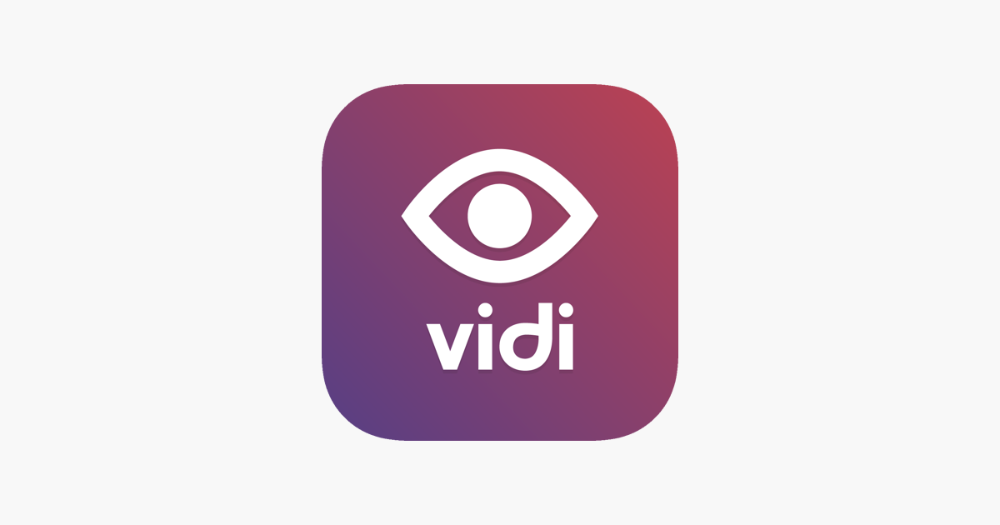
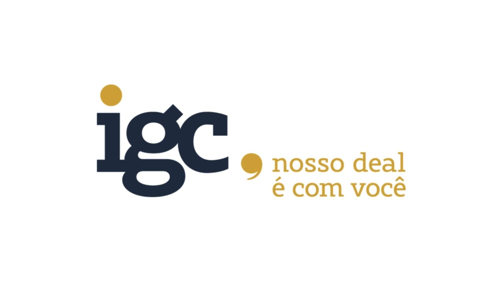
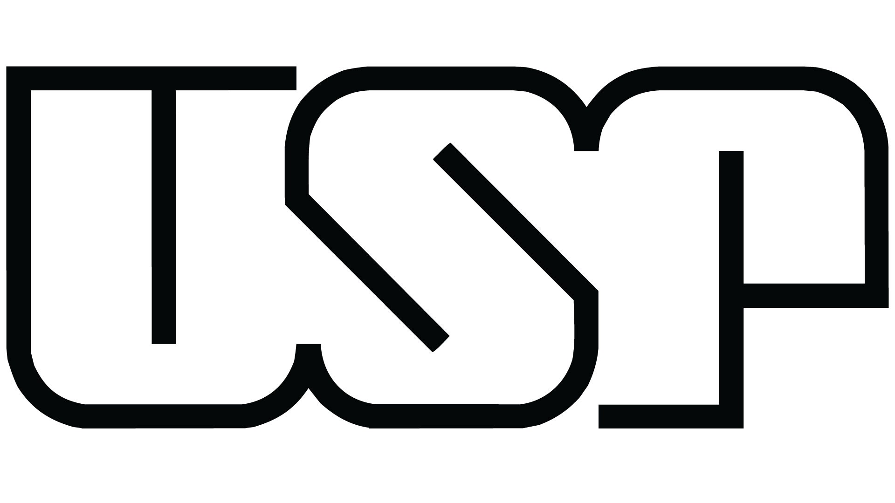

Experience
Quality Assurance
6 anos
With six years of experience in the Quality Assurance field, my journey has been marked by a constant evolution in understanding and applying testing strategies. Currently, I work as a QA Leader, coordinating teams and ensuring that quality processes are efficiently followed.
Web Developer
3 years
In addition to working as a QA, I have knowledge in web development, with experience in JavaScript and related technologies. This skill allows me to have a deeper understanding of the systems I test, identifying potential vulnerabilities and optimizing validation processes.
Test Automation
5 years
I specialize in test automation for various platforms, covering web, mobile, and API applications. I use tools like Cypress and Robot Framework to ensure robust and efficient test coverage, reducing execution time and increasing software reliability. My experience includes creating CI/CD pipelines integrated with automated tests.
Mobile Tester
5 years
My experience in mobile application testing is extensive, covering different platforms and technologies. I have expertise in testing native and hybrid apps, ensuring a smooth and error-free user experience. I use both manual and automated tests to validate functionality, performance, and compatibility across multiple devices.
Recent Projects

🚀Vidi
📌Role: QA Leader
🛠Tech Stack: Cypress, Robot Framework, CI/CD, Azure DevOps
Led the QA team, ensuring test automation strategies for web and mobile. Implemented CI/CD pipelines for continuous testing and integrated with Azure DevOps to optimize workflows.

🏢 IGC Partners
📌 Role: QA Leader
🛠 Tech Stack: Robot Framework, Requirements Analysis, Product Management
Managed test processes, ensuring quality across various projects. Worked closely with Product Managers and stakeholders to analyze requirements and define testing strategies.
Volkswagen - LM
📌 Role: Senior QA
🛠 Tech Stack: Cypress, Playwright, JavaScript, Postman
Developed and executed automated tests for web applications using Cypress and Playwright. Conducted API testing with Postman and collaborated with developers to optimize software quality.
Education
Instituto Infnet - Systems Analysis and Development
I am currently pursuing a degree in Systems Analysis and Development (ADS) to further enhance my knowledge and skills as a Quality Engineer. This course allows me to deepen my understanding of software development, systems architecture, and computational technologies, providing a strong foundation in programming, databases, networks, and information security. By expanding my technical expertise, I can develop more efficient testing strategies and ensure higher software quality.

USP - Licentiate in Physics
Studying Physics at USP was an enriching experience, as it provided me with a solid foundation in exact sciences, a strong theoretical background, and essential analytical skills. The course covered everything from the study of fundamental natural laws to their application in various contexts, such as experimental physics and computing. The interaction with renowned professors and researchers, along with the collaboration with dedicated peers, were also key aspects that prepared me for both academic and professional challenges.